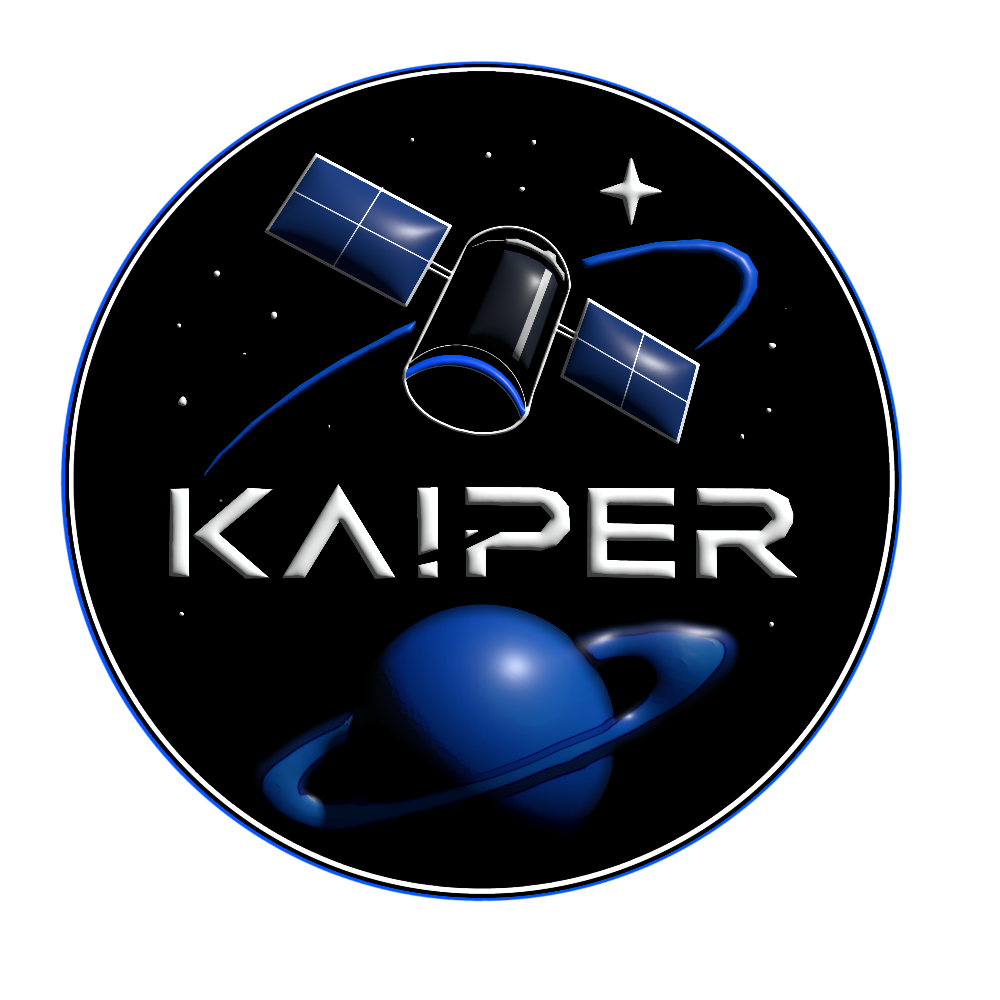
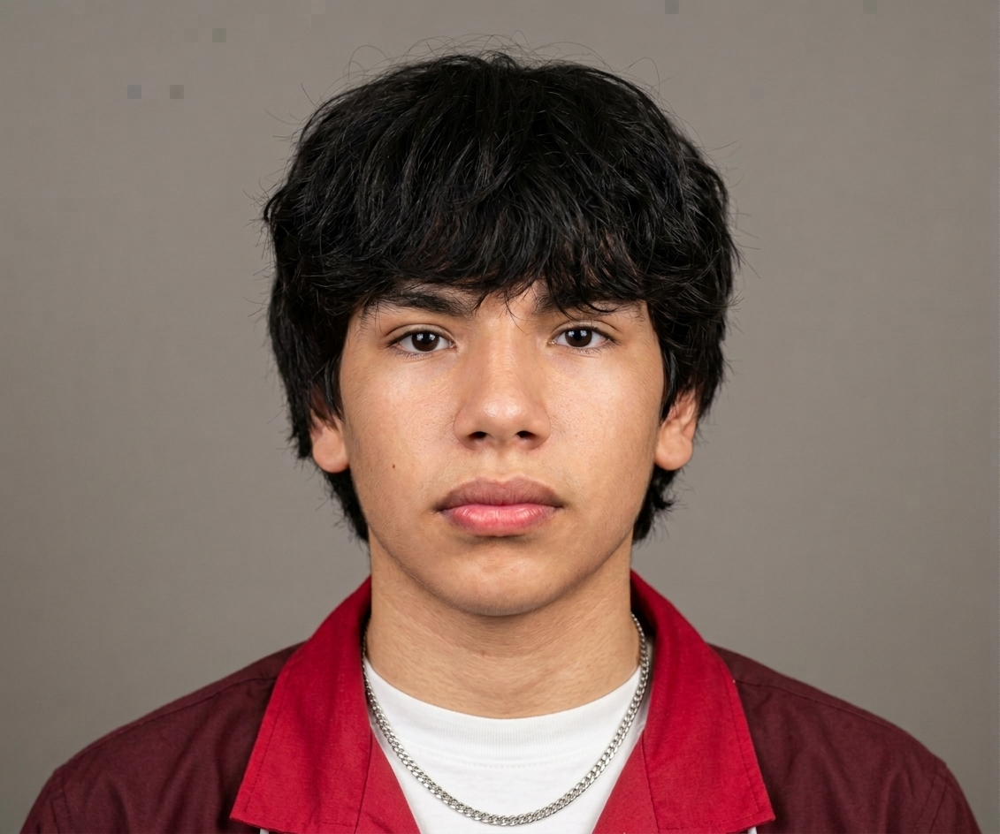
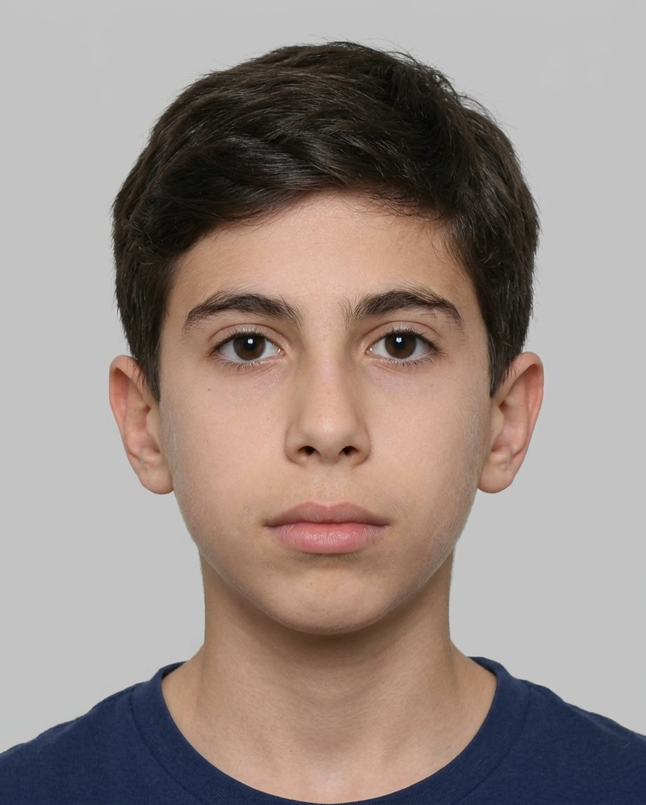
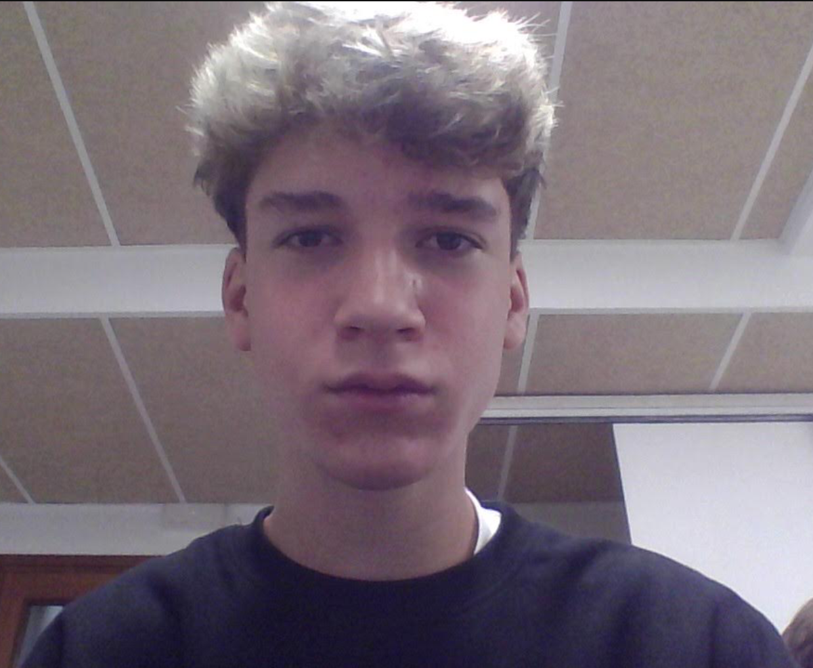
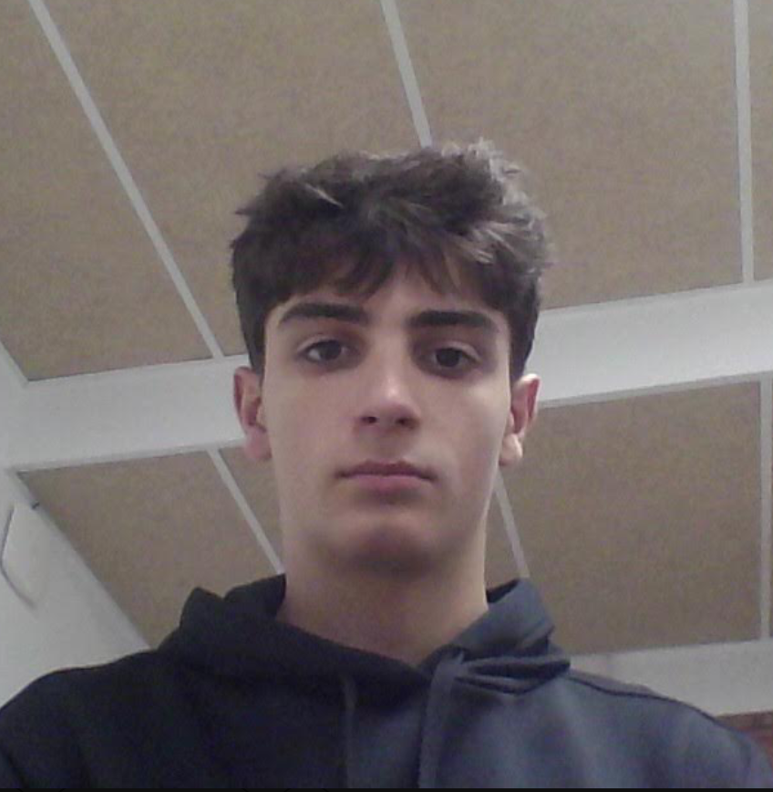

KAIPERA high school CanSat team. We’re building a mini-satellite to explore, during its descent, whether an environment could support liquid water.
CanSat is an educational program of the European Space Agency (ESA), run in Spain together with ESERO. Student teams build a mini-satellite the size of a soda can, with its own sensors, radio and parachute.
Fit everything inside a can-sized cylinder, 66 mm wide and 115 mm tall: sensors, a microcontroller, a radio and a parachute.
The CanSat is taken up high, usually around a kilometre, and released. It then falls back under its parachute.
While it descends it measures temperature and pressure (the primary mission) plus a second mission chosen by each team, and sends everything by radio to a ground station.
The best teams of each country go on to the European CanSat competition, organised by ESA.
Hi, I’m Matias. This whole project started with a name before it started with a sensor. “Kai” means ocean in Hawaiian, and it’s also the name my partner and I would love to give our future son one day. So when I learned that the Kuiper Belt might hide oceans under its ice, in a place nobody could see, it felt like this project was meant to carry that name. Kaiper isn’t just a science mission to me. Every reading it sends back on the way down is us asking, in our own small way, whether there’s an ocean hiding somewhere nobody’s checked yet.
Humidity, temperature, and UV radiation combined into a custom score that rates each stage of the descent.
An inertial sensor (IMU) tracks the stability of the descent, the same data that matters in real parachute and reentry system design.
We measure how background radiation changes with altitude, the same question astrobiologists ask about whether the ice on Kuiper Belt objects could shield a subsurface ocean.
Each of the three sensors on its own is a fairly standard, well-tested piece of kit. That’s on purpose, we wanted the mission to be ambitious in what it asks, not in what it risks breaking. The humidity, temperature and UV readings are the same kind of data real habitability studies use to rule places in or out, so our index isn’t just a made-up score, it’s built the same way scientists actually reason about it.
The turbulence data from the IMU is the part we’re most confident will simply work, since it’s just movement data, and it gives us something almost no other CanSat team measures: a real picture of how rough the descent was, stage by stage. That matters beyond the “cool factor”: it’s literally the kind of data engineers use to decide if a parachute or landing system design is safe.
The radiation sensor is the one honest question mark. It’s the hardest part to source and calibrate for a team at our level, so if it doesn’t make it into the final build, the mission still stands on the other two layers. If it does work, it lets us actually test, at a tiny atmospheric scale, the same shielding question astrobiologists ask about Kuiper Belt objects: how much cover does it take to protect something underneath from radiation. That’s the number we’d be most excited to bring back.
Here is how Kaiper is coming together: our first 3D-printed can and the sessions with our mentor, who works for ESA.
The first prints of our can, made on a 3D printer.
All of us listening to our mentor, who works for ESA.
4th-year ESO students at Escola Vedruna Tona, working on electronics, structure, programming, and data analysis.




Companies supporting team Kaiper.